図解：ゴシックの美術
ゴシック美術の展開
- 12世紀中頃
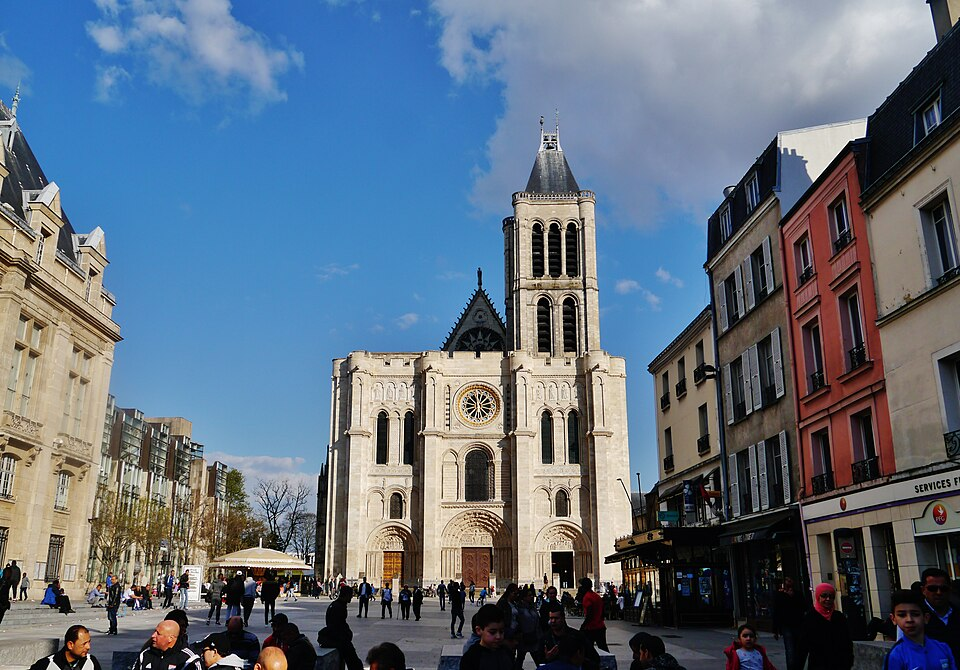
サン・ドニの改築院長シュジェール
光で信仰を導く - 13世紀
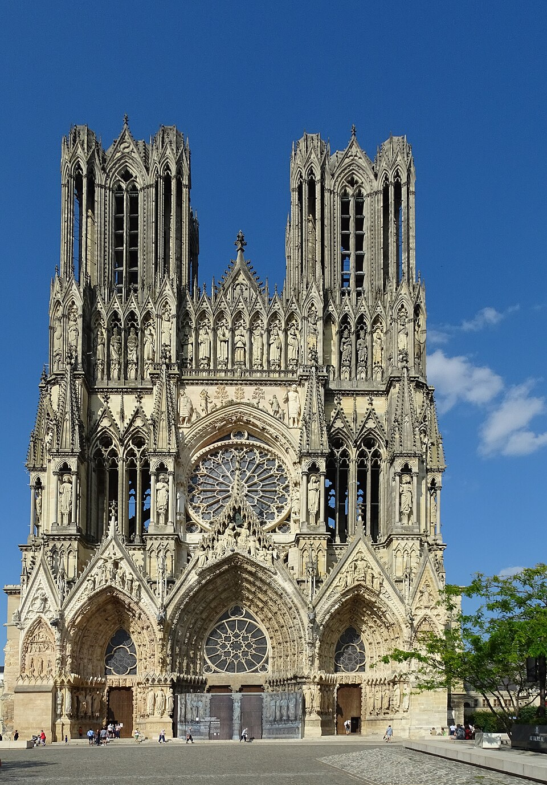
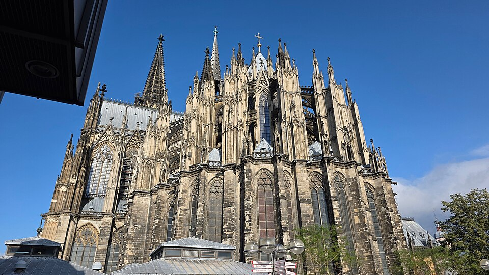
大聖堂が高さを競う尖頭アーチで上へ
薄い壁と大きな窓 - ゴシック期
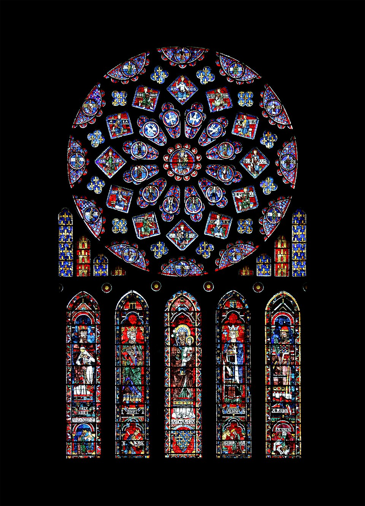
光と聖母の美術聖母に救いを求める
自然な人体の彫刻 - 13〜14世紀
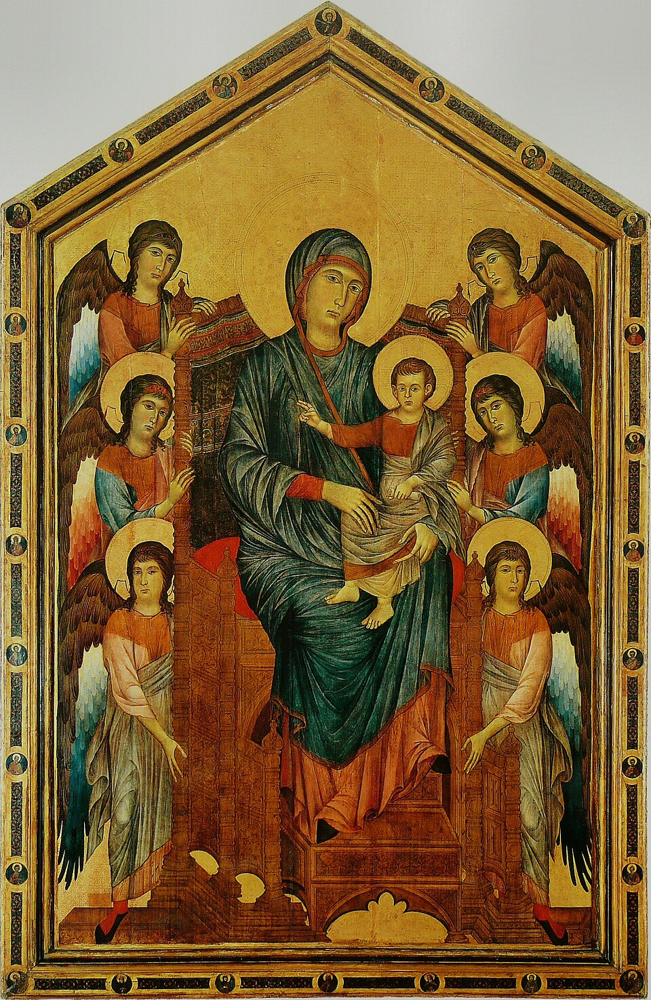
 イタリアの画家チマブーエ・ジョット
イタリアの画家チマブーエ・ジョット
自然な人物と感情 - 14世紀後半〜
 国際ゴシック伊仏の特徴が融合
国際ゴシック伊仏の特徴が融合
ルネサンスの兆し
ロマネスクと何が違うか
力を地面の方向へ天井トンネル・ヴォールト交差ヴォールト
リブで補強壁と光厚い壁で薄暗い薄い壁と大きな窓
ステンドグラス彫刻枠に合わせて変形自然なプロポーション
S字の優美なポーズ美術の担い手上位聖職者の意向多くの人の意向
裕福な平教徒が増加
図版の出典
- 《サン・ドニ修道院聖堂（サン・ドニ大聖堂）》建築家不詳（シュジェール院長の改築事業）：出典（CC BY-SA 4.0）
- 《ランス・ノートルダム大聖堂》ジャン・ドルベほか：出典（CC BY-SA 4.0（Ad Meskens撮影））
- 《ケルン大聖堂のフライング・バットレス》大聖堂建築工房、複数の建築家：出典（CC BY-SA 4.0）
- 《シャルトル大聖堂北翼廊の薔薇窓（bay121）》作者不詳：出典（Public domain（PD-self、Guillaume Piolle/Eusebius写真））
- 《荘厳の聖母（聖母子と六天使、ルーヴルのマエスタ）》チマブーエ：出典（Public domain（PDM））
- 《ユダの接吻（キリストの捕縛）》ジョット：出典（Public domain（PD-Art））
- 《ベリー公のいとも豪華なる時祷書・1月（Ms.65、f.1v）》ランブール兄弟：出典（Public domain（PD-Art））
重要人物
ゴシック建築の始まり
国王と教皇
- フィリップ2世フランス国王尊厳王。パリを王都として整備し、王権を復興
- フィリップ4世フランス国王教会に課税してアナーニ事件。教皇庁をアヴィニョンへ
- ボニファティウス8世教皇聖職者への課税に反発し王を破門。アナーニで捕らわれる
イタリアの画家
- チマブーエ画家名前が残る最も古い画家。自然な聖母子を描く
- ジョット・ディ・ボンドーネ画家「西洋絵画の父」。空間と感情を表しプレ・ルネサンスに
- ドゥッチョ画家シエナ絵画の祖。チマブーエの影響を受けたとされる
- シモーネ・マルティーニ画家シエナ派。アヴィニョン教皇宮殿に呼ばれる
- ジェンティーレ・ダ・ファブリアーノ画家国際ゴシックの時代のイタリアで活躍
- ピサネッロ画家国際ゴシックの時代のイタリアで活躍
フランスで活躍した画家
画家を評価した人
ゴシックの誕生
ロマネスクの信仰生活
動画 0:36～後の美術史家からロマネスクと呼ばれた、10世紀後半から12世紀頃の西ヨーロッパでは、聖地巡礼が盛んでした。農耕技術の発達による人口増加もあり、巡礼の途中で新たな土地に定住する人も多くいました。巡礼路には信者を受け入れる教会が建てられ、西洋各地に分散しながらも、石造の屋根、厚い壁、半円アーチという共通点を持っていました。
信者は薄暗い空間で質素な生活を送り、熱心に祈りました。その実態は、領主に働かされ、教会に収穫物の10分の1を納める厳しい信仰生活でもありました。文化の担い手は聖職者や修道士に限られ、各地の王権が弱まるなか、経済力も得た教皇が西洋の最高権力者となりました。皇帝でも、破門を宣告されれば教皇に逆らえません。キリスト教徒でなければ人ではない、といっても過言ではない状況でした。
都市の教会とゴシックの名
動画 1:44～12世紀中頃、それまでのロマネスクとは異なる建築様式が生まれました。都市部に多く建てられ、空高く突き出す尖塔を持つ豪勢な教会です。後のルネサンスの人々は、ゲルマン民族のゴート人を意味する「ゴシック」という名で、この時代を呼びました。神が絶対だったロマネスクと、人を中心とする文化を復興したルネサンスの間に位置する美術です。
サン・ドニ、光と王権
動画 2:21～ゴシック建築の契機となったのは、フランス北部、現在のパリ郊外のサン・ドニ修道院の改築でした。歴代フランス国王の墓廟であったこの場所を、修道院長シュジェールが、天高く壮大なものにするよう計画しました。

《サン・ドニ修道院聖堂（サン・ドニ大聖堂）》
- 作者
- 建築家不詳（シュジェール院長の改築事業）
- 制作時期
- 12世紀／後代改築・修復を含む
- 所在地・所蔵
- フランス、サン・ドニ
- 素材・形式
- 建築・構造
出典・画像について
シュジェールは、信仰を導く手段として光の重要性を説きました。高く伸びる尖塔は神のいる天空に近づき、建築技術の向上によって、天空からの光を多く取り込めるようになりました。彼は学友であった国王ルイ6世と、その息子ルイ7世の政治顧問も務めました。国王ゆかりの場所を豪勢にすることで、王権の強さを印象づける目的もあったとされます。カロリング朝に続くカペー朝も、この頃には6代目となり、徐々に足場を固めていました。
初期のゴシック大聖堂
動画 3:09～サン・ドニの改築を契機に、ゴシック様式は北方を中心に広がりました。パリのノートルダム大聖堂、シャルトル大聖堂、イギリスのカンタベリー大聖堂などが、初期の代表例です。パリのノートルダムでは、2019年の大規模火災によって見事な尖塔が焼け落ちました。

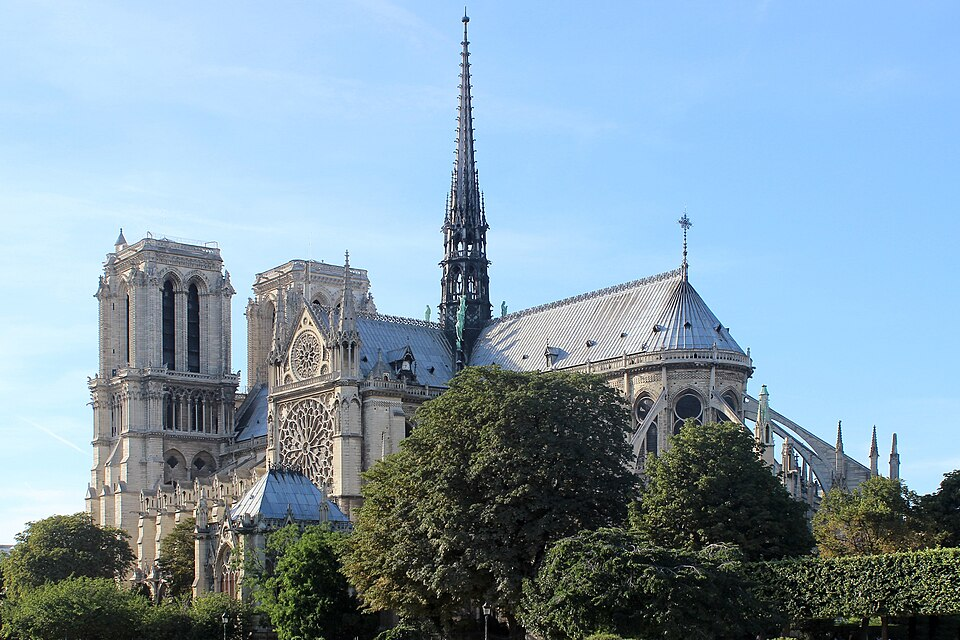
画像を拡大 ＋《パリのノートルダム大聖堂》
- 作者
- 初期設計者不詳、複数の建築工匠
- 制作時期
- 1163年着工、14世紀まで建設／後代修復／写真2013年
- 所在地・所蔵
- フランス、パリ、シテ島
- 素材・形式
- 建築・構造
出典・画像について
現存建築には後代の増築・完成・修復を含みます。2013年の火災前の写真です。復旧後の現状については本文の注記を参照してください。
画像出典：Miguel Hermoso Cuesta
CC BY-SA 3.0
作品情報：作品・画像・利用条件

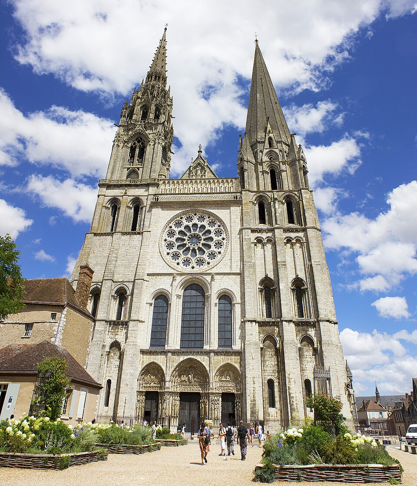
画像を拡大 ＋《シャルトル・ノートルダム大聖堂》
- 作者
- 建築家不詳（シャルトルの棟梁）
- 制作時期
- 西正面12世紀、主要部1194～1260年、北塔尖塔1507～1513年
- 所在地・所蔵
- フランス、シャルトル
- 素材・形式
- 建築・構造
出典・画像について

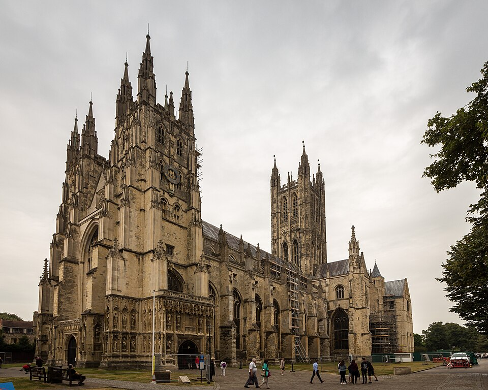
画像を拡大 ＋《カンタベリー大聖堂》
- 作者
- ウィリアム・オブ・サンス、ウィリアム・ジ・イングリッシュマンほか
- 制作時期
- 内陣1175～1184年、身廊1377～1405年、中央塔1498年、北西塔1834年
- 所在地・所蔵
- イギリス、ケント州カンタベリー
- 素材・形式
- 建築・構造
出典・画像について
ノートルダムの火災後について
2019年の尖塔焼失は動画制作時の出来事です。その後、尖塔は再建され、大聖堂は2024年12月7～8日に再開しました。本文の火災説明と現在の状態を区別してください。
確認資料：大聖堂公式・再開式典 · 復旧事業機関・尖塔の再建
ゴシック建築の技術と装飾
ヴォールトと薄い壁
動画 3:40～ロマネスク建築では、屋根を石造にしたことで壁に大きな負荷がかかり、壁を厚くする必要がありました。大きな窓を作れず、内部は暗くなります。高い建築を作れなかった原因には、石の重さだけでなく、円形のヴォールト天井もありました。
ヴォールトとは、アーチを水平方向に伸ばしたものです。教会のバシリカでは、この形が連続しています。ロマネスクで用いられた単純な構造は、トンネル・ヴォールトと呼ばれます。この形では重量による負荷が外側へ逃げ、柱だけでなく壁にも均等にかかるため、壁を厚くする必要がありました。
この問題を解決したのが、尖頭アーチと交差ヴォールトです。交差ヴォールトは、同じ形のトンネル・ヴォールトを直交させた構造です。屋根からの負荷が柱にかかるため、柱を強くすれば壁を薄くすることができます。さらに、天井を補強する骨組みであるリブを入れ、全体の強度を高めました。壁を薄くできたことで、ロマネスクでは難しかった大きな窓を設け、光を多く取り込めるようになりました。
尖頭アーチと高さの競争
動画 5:11～尖頭アーチは、半円アーチと異なり、先の尖ったアーチです。半円では、上からの荷重が横へ逃げ、柱を太くしても倒壊の危険があります。そこで先を尖らせ、地面の方向へ力を逃がす構造にしました。これによって高い建物が作れるようになり、教会は高さを競うように上へ伸び、大型化していきました。
高さを競った理由には、シュジェールの説く信仰への賛同もあったでしょうが、周囲の都市より豪華にしたいという思惑もあったと考えられます。大きな教会には多くの人が集まり、交易も活発になります。見栄えのする大きな教会は、観光地のような役割も強かったのです。
最盛期とフライング・バットレス
動画 6:05～13世紀、ゴシック建築は最盛期を迎えました。フランスのランス・ノートルダム大聖堂、アミアン・ノートルダム大聖堂、ドイツのケルン大聖堂が代表例です。大きさだけでなく複雑な構造を持ち、最後の工夫ともいえるフライング・バットレスが多用されました。

《ランス・ノートルダム大聖堂》
- 作者
- ジャン・ドルベほか
- 制作時期
- 13世紀以降（1211年着工）
- 所在地・所蔵
- フランス、ランス
- 素材・形式
- 建築・構造
出典・画像について
現存建築には後代の増築・完成・修復を含みます。
画像出典：Ad Meskens
You are free to use this picture for any purpose as long as you credit its author, Ad Meskens.
Example: © Ad Meskens / Wikimedia Commons
If you use this work outside of the Wikimedia projects, a message or a copy is very much appreciated.
This image is not in the public domain. A statement such as "From Wikimedia Commons" or similar is not by itself sufficient. If you do not provide clear attribution to the author you do not comply with the terms of the file's license and you may not use this file. If you are unable or unwilling to provide attribution you should contact Ad Meskens to negotiate a different license.
CC BY-SA 4.0（Ad Meskens撮影）
作品情報：作品・画像・利用条件

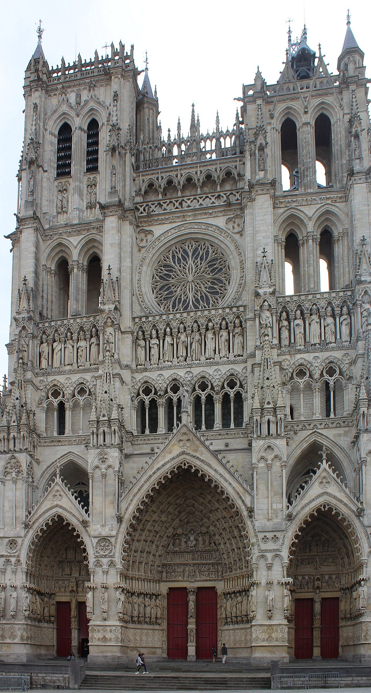
画像を拡大 ＋《アミアン・ノートルダム大聖堂（西正面）》
- 作者
- ロベール・ド・リュザルシュほか
- 制作時期
- 1220年着工、主に13世紀
- 所在地・所蔵
- フランス、アミアン
- 素材・形式
- 建築・構造
出典・画像について

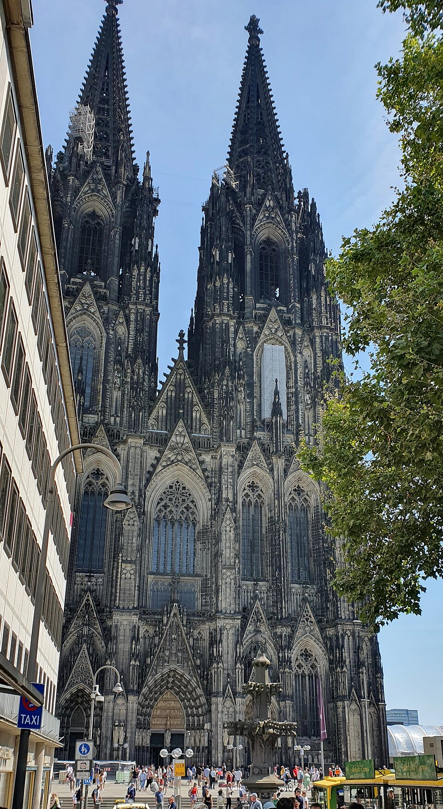
画像を拡大 ＋《ケルン大聖堂》
- 作者
- ゲルハルト師ほか／19世紀エルンスト・フリードリヒ・ツヴィルナーら
- 制作時期
- 1248年着工、1880年完成
- 所在地・所蔵
- ドイツ、ケルン
- 素材・形式
- 建築・構造
出典・画像について
フライング・バットレスは、外壁を支える、浮いた梁のような構造です。尖頭アーチでも横方向にはある程度の力がかかるため、その力を外から支えます。バットレス自体はロマネスクにもありましたが、ゴシックでは光を取り入れるため、飛び梁の形になりました。

《ケルン大聖堂のフライング・バットレス》
- 作者
- 大聖堂建築工房、複数の建築家
- 制作時期
- 1248年着工、1880年完成、補修を継続
- 所在地・所蔵
- ドイツ、ケルン大聖堂
- 素材・形式
- 建築・構造
出典・画像について
交差ヴォールト、尖頭アーチ、フライング・バットレスなど、さまざまな技術が用いられました。資料によってはゴシック以前にも使われていたとされるので、新たに生み出したというより、技術を洗練させたと表現する方が適切かもしれません。
光を彩るステンドグラス
動画 7:05～装飾も豪華になりました。窓には着色ガラスを用いるステンドグラスが使われ、文字を読めない人にも、聖書を視覚的に理解させる役割を引き継いでいます。また、バラ窓という大きな円形窓が設けられた場所も多くあります。
同じ個体と掲載に必要な条件を確定できず、画像を保留しています。
《王冠を着けた単独坐像のステンドグラス（個体未確定）》
- 作者
- 未確定
- 制作時期
- 未確定
- 所在地・所蔵
- 未確定
- 素材・形式
- ステンドグラス
出典・画像について
同じ個体と掲載に必要な条件を確定できず、画像を保留しています。
バラ窓と聖母への救い
動画 7:30～バラ窓は、聖母マリアを暗示します。マリアは「くすしきバラの聖母」とも呼ばれます。この時代に多いノートルダムという名も「われらが貴婦人」を意味し、マリアを指します。

《シャルトル大聖堂北翼廊の薔薇窓（bay121）》
- 作者
- 作者不詳
- 制作時期
- 1235年頃
- 所在地・所蔵
- シャルトル・ノートルダム大聖堂、北翼廊
- 素材・形式
- ステンドグラス
出典・画像について
画像出典：Eusebius
Public domain（PD-self、Guillaume Piolle/Eusebius写真）
作品情報：作品・画像・利用条件
制作メモ
配信写真は合成・幾何補正済みです。
本教材では追加加工していません。
厳しい信仰生活だったロマネスクの反動から、慈愛に満ちた聖母へ救いを求めた面もありました。交易が活発になり、裕福な平教徒が増えたことも関係します。一部の上位聖職者の意向だけでなく、多くの人の意向が美術に反映されるようになりました。
自然な人体とS字の優美さ
動画 8:07～聖母に癒しを求める傾向は、彫刻にも現れます。ロマネスクの枠組みの法則では、枠に詰め込むために不自然な変形がされていました。ゴシックでは、円柱人像として柱から飛び出す形で彫られ、自然なプロポーションを表せるようになりました。緩やかなS字を描くポーズは、優美さを示す表現で、ゴシック期に多く見られます。

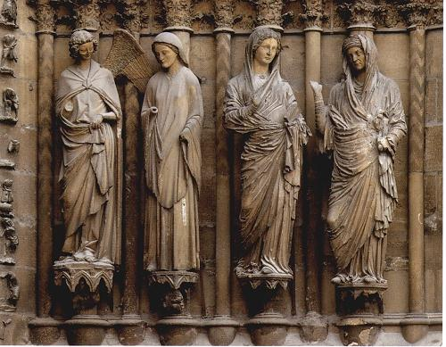
画像を拡大 ＋《ランス大聖堂《受胎告知》《御訪問》柱像》
- 作者
- 作者不詳
- 制作時期
- 動画1230～1250年頃／候補1211年の矛盾未解決
- 所在地・所蔵
- フランス、ランス大聖堂西正面中央入口
- 素材・形式
- 石造彫刻
出典・画像について
西正面中央入口の柱像。左から《受胎告知》の天使と聖母、《御訪問》の聖母とエリサベト。
教皇の権力の低下とフランス王権
教皇の権力の変化
動画 8:40～写実的な聖人像は親しみを生む一方、威厳を失わせるため、上位の聖職者にとって都合が悪い面もありました。そのため、以前は近寄りがたい威厳を保つ、不自然な表現が用いられました。ローマ美術にも同様の考え方がありました。それが自然で受け入れやすい表現になったのは、教会、ひいては教皇の権力が弱まったためです。十字軍を指揮し、エルサレム奪還を成功させ、破門で相手を屈服させた教皇の権力にも、変化が起こりました。
十字軍の失敗と東西の断絶
動画 9:28～第1回十字軍は成功しましたが、聖地を再びイスラム国家に奪われてから、第2回以降は失敗が続きました。神が味方しているとして送り出しても敗れるため、教皇は説得力を失います。特に致命的だったのは第4回十字軍です。中継地ヴェネツィアの商人にそそのかされた軍は、エルサレムではなく、ビザンツ帝国の首都コンスタンティノープルを占領しました。
関係が悪かったとはいえ、同じキリスト教徒の都市を攻めたことで、東西の関係はさらに悪化しました。地道に続いていた関係修復の動きも失われ、完全に仲違いすることになったのです。
王権を復興するフランス
動画 10:09～教皇の力が落ちる一方、フランス王国は力を蓄えていました。ロマネスク期のフランスは、ヴァイキングの侵攻に苦しんでいました。ノルマンディーを支配したヴァイキングは、さらにイングランドへ侵攻して領土を拡大し、フランスと領土を巡って何度も衝突します。
この頃のイギリス美術には、カロリング朝の影響が見られます。ヒストリエ・イニシャルと呼ばれる、鳥獣文から派生したかのような文字表現があります。

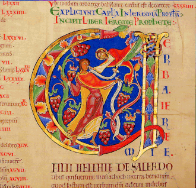
画像を拡大 ＋《ウィンチェスター聖書、fol.148《エレミヤに語りかける神》》
- 作者
- 作者不詳
- 制作時期
- 12世紀（1160～1175年頃）
- 所在地・所蔵
- イギリス、ウィンチェスター大聖堂
- 素材・形式
- 写本挿絵
出典・画像について
イギリスの侵攻に苦しんでいたフランスは、尊厳王フィリップ2世の時代に盛り返しました。パリを王都として整備し、後のルーヴル宮殿の前身となる建物を建てます。尊厳王という異名からも分かるように、王権復興に貢献したフランス史上の名君と評価されています。領土を奪われたイギリスのジョン王には、失地王という不名誉な呼び名が付きました。その名が縁起の悪いものとされ、以後、ジョンという名の王はいないともいわれます。
課税とアナーニ事件
動画 11:14～フランス国王と教皇の立場が明確になったのは、フィリップ4世の時代です。彼は盛んに戦争を仕掛けて領土を広げ、増える軍事費を賄うため、教会への課税を命じました。教皇ボニファティウス8世は聖職者への課税に反発し、フィリップ4世の破門を命じます。
しかし王は屈せず、1303年、家臣を使ってローマ近郊のアナーニにいた教皇を捕らえさせました。アナーニ事件として知られるこの出来事で、教皇はすぐ解放されたものの、その屈辱から1か月後に憤死したと説明されます。
フィリップ4世は独断で動いたのではなく、フランス全土の代表者を集めた三部会で支持を得ていました。この頃の人々が、教皇より国王を支持していたことが分かります。
アヴィニョンと西方の分裂
動画 12:21～さらに1305年、フランスから新教皇が出たのを機に、フィリップ4世は教皇庁を南フランスのアヴィニョンへ移しました。アヴィニョン捕囚と呼ばれるこの出来事はローマ市民を怒らせ、ローマ側でも別の教皇を立てる異常事態となります。西方教会大分裂です。14世紀以降、教皇とカトリックの力が弱まり、高さを競うゴシック建築も下火になりました。しかし、新たな美術も展開されました。
アヴィニョンと西方教会大分裂の年代
本文は動画の一続きの説明を保持していますが、1305年はクレメンス5世の選出、アヴィニョンでの教皇滞在開始は1309年、西方教会大分裂は1378～1417年です。同時に起きた出来事ではありません。
確認資料：教皇宮殿公式・9人の教皇
イタリア絵画と国際ゴシック
交易と画家の登場
動画 12:57～フランスとともに力をつけたのがイタリアです。十字軍の失敗は教皇の力を弱めましたが、中継地であるイタリアの商業都市では交易が活発になりました。商人が力をつけ、その地で新しい美術が生まれます。特に顕著だったのが絵画でした。ロマネスク期のイタリアにはビザンティンの流れをくむ壁画がありましたが、ゴシック期にはフィレンツェから絵画の発展が始まり、中世とルネサンスを橋渡しする画家が登場しました。
チマブーエの自然な聖母子
動画 13:33～その人物が、美術史上でも重要とされるチマブーエです。それまで絵を描いていた修道士などは専門家ではなかったこと、ヴァザーリの『画家・彫刻家・建築家列伝』で最初に紹介されることから、一般に最初の画家とされます。それ以前にも画家はいたかもしれませんが、名前が残る最も古い人という意味で捉えられています。
最初の画家という位置付け
本文はチマブーエを最初に置く講義上の説明を保持しています。古代にも名前や署名の残る絵師は存在しており、西洋史全体で最初、または最古の実名画家という意味ではありません。ヴァザーリの列伝を起点とする位置付けと区別してください。
確認資料：Met・古代絵師エウフロニオスの署名
チマブーエの作品にはビザンティンの影響が残る一方、写実的で人間らしい自然な聖母子が描かれています。イタリア文学を代表する詩人ダンテは『神曲』で、絵画世界の覇者として彼を絶賛しました。

《荘厳の聖母（聖母子と六天使、ルーヴルのマエスタ）》
- 作者
- チマブーエ
- 制作時期
- 1280年代
- 所在地・所蔵
- パリ、ルーヴル美術館、INV254、MR159
- 素材・形式
- 板絵
出典・画像について
ジョットの空間と感情
動画 14:21～ダンテがさらに絶賛し、ビザンティンを過去のものにしたのは、チマブーエの弟子とされるジョット・ディ・ボンドーネでした。「西洋絵画の父」とも称され、絵画の歴史を大きく変えた人物です。
代表作《ユダの接吻》には、それまでと異なる自然な表現、遠近法のない時代の空間表現、そして感情の表現が見られます。この特徴から、ゴシック期の画家でありながら、プレ・ルネサンスに分類されることが多くあります。
画像を拡大 ＋
《ユダの接吻（キリストの捕縛）》
- 作者
- ジョット
- 制作時期
- 1304～1306年（動画1305年）
- 所在地・所蔵
- パドヴァ、スクロヴェーニ礼拝堂
- 素材・形式
- フレスコ画
出典・画像について
画像出典：Giotto
Public domain（PD-Art）
作品情報：作品・画像・利用条件
ジョットのフレスコが多く残るスクロヴェーニ礼拝堂は、高利貸しで財を成した家が建てました。聖職者が芸術活動を主導するのでなく、個人がパトロンとなって画家に依頼する形式が見られます。聖職者の依頼であれば、ここまで自由な表現はできなかったかもしれません。

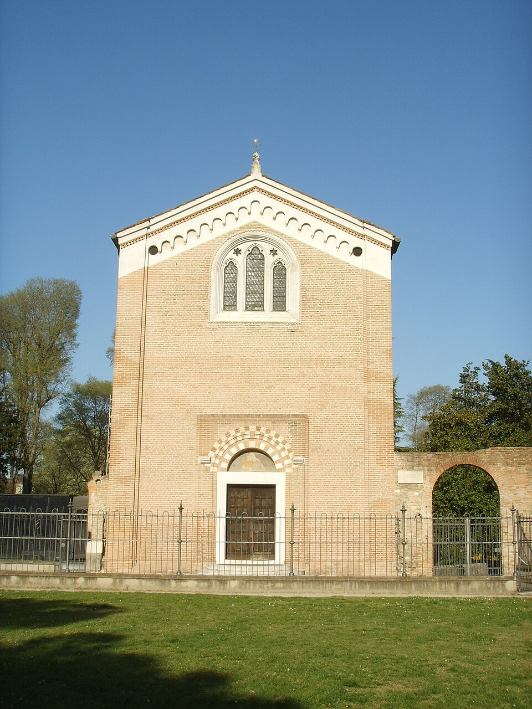
画像を拡大 ＋《スクロヴェーニ礼拝堂（外観）》
- 作者
- 建築家不詳（施主エンリコ・スクロヴェーニ）
- 制作時期
- 1305年、後代補修を含む
- 所在地・所蔵
- パドヴァ、エレミターニ広場
- 素材・形式
- 建築・構造
出典・画像について
ドゥッチョとシモーネ・マルティーニ
動画 15:18～主にフィレンツェで活動したチマブーエやジョットに対し、シエナでも新しい動きがありました。シエナ絵画の祖とされるドゥッチョは、チマブーエの影響を受けたといわれ、作品にも類似が見られます。実際にチマブーエが描いたと誤解されていた時期もありました。

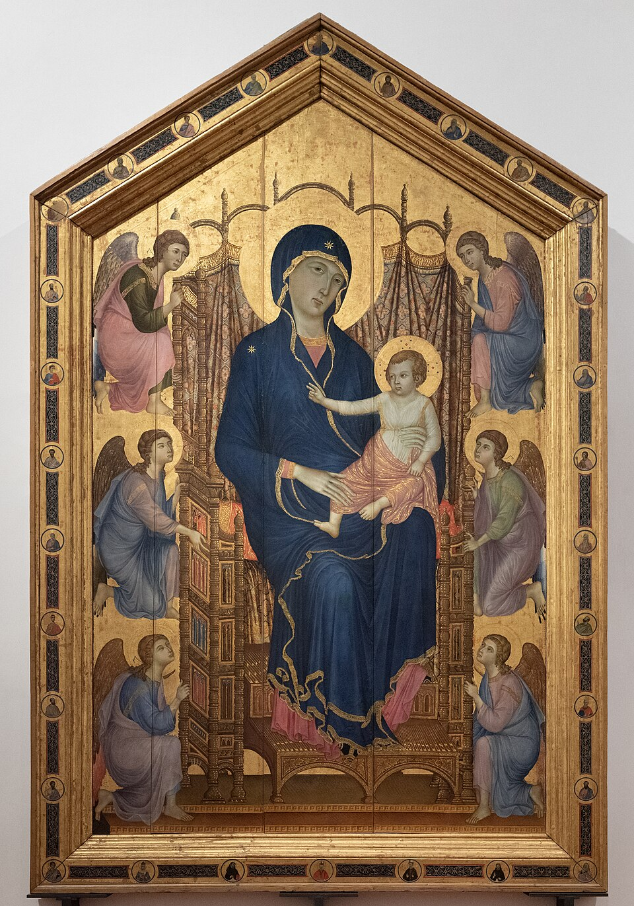
画像を拡大 ＋《ルチェッライの聖母》
- 作者
- ドゥッチョ・ディ・ブオニンセーニャ
- 制作時期
- 1285～1286年頃
- 所在地・所蔵
- フィレンツェ、ウフィツィ美術館、00284543
- 素材・形式
- 板絵
出典・画像について
ドゥッチョの後継者にあたるのが、シモーネ・マルティーニです。絵画の表情には硬さがあるものの、緻密な描写と優美さが見られ、ゴシック特有のS字のポーズも現れます。吹き出しのような表現など、新しい試みも見られます。金地を背景とする豪華な装飾もシエナの特徴です。フィレンツェは写実的で自然な表現、シエナは優美で豪華な装飾が特徴といえるでしょう。

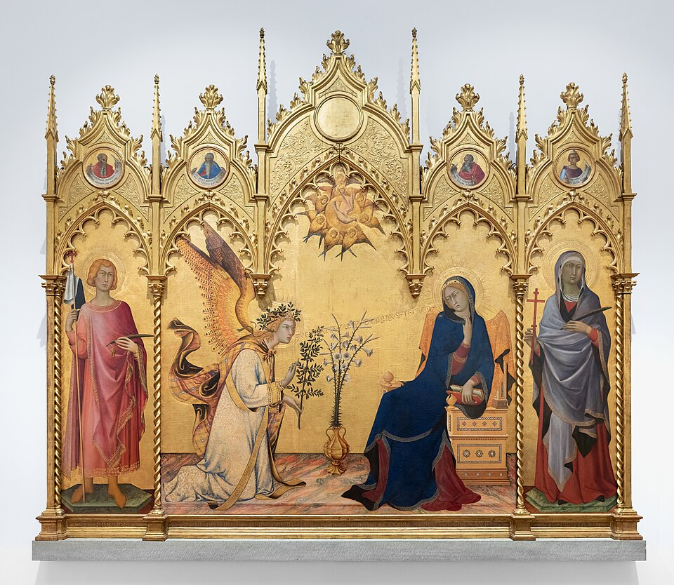
画像を拡大 ＋《聖アンサヌスと聖女を伴う受胎告知》
- 作者
- シモーネ・マルティーニ、リッポ・メンミ
- 制作時期
- 1333年
- 所在地・所蔵
- フィレンツェ、ウフィツィ美術館、00284557
- 素材・形式
- 板絵
出典・画像について
国際ゴシックからルネサンスへ
動画 16:06～イタリア絵画の発展は、フランス美術にも大きな影響を与えました。14世紀後半からの国際ゴシックでは、両国の絵画の特徴が融合します。きっかけは、アヴィニョン捕囚でした。アヴィニョン教皇宮殿の新宮殿を作るため、シエナ派のシモーネ・マルティーニらを呼んだことから、両国の美術交流が活発になり、国際的な様式が広がったのです。

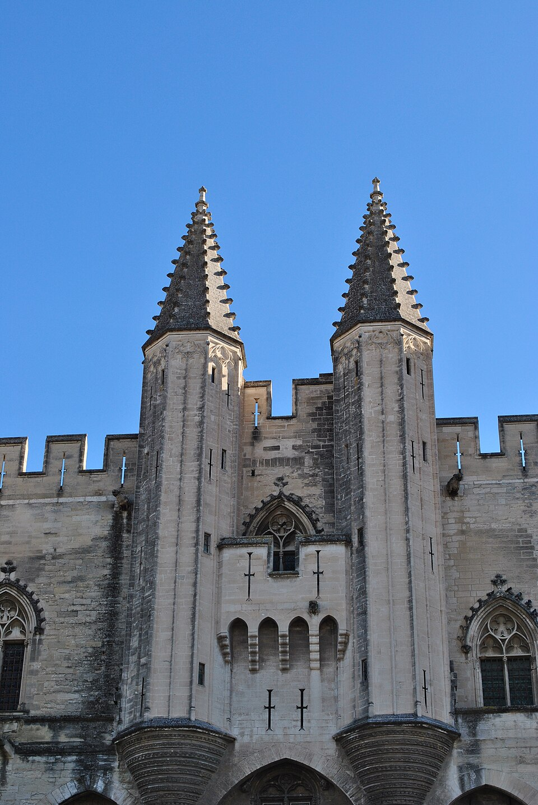
画像を拡大 ＋《アヴィニョン教皇宮殿（西正面入口）》
- 作者
- ピエール・ポワソン（旧）、ジャン・ド・ルーヴル（新）
- 制作時期
- 旧宮殿1335～1342年／新宮殿1342～1352年
- 所在地・所蔵
- フランス、アヴィニョン
- 素材・形式
- 建築・構造
出典・画像について
フランスでも、写本制作の場が修道院から街の工房へ移っていました。ジャン・ピュセルは、北方で初めて空間表現を行った人物として知られます。フランスにも独自の発展がありました。

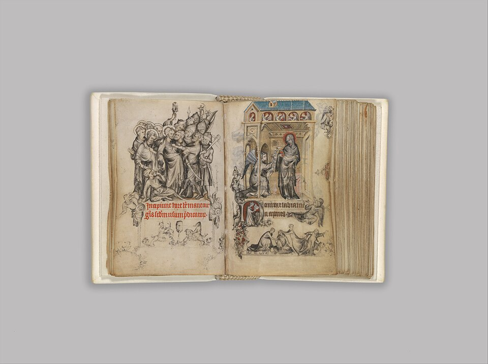
画像を拡大 ＋《王妃ジャンヌ・デヴルーの時祷書（fols.15v～16r、捕縛／受胎告知）》
- 作者
- ジャン・ピュセル
- 制作時期
- 1324～1328年頃
- 所在地・所蔵
- ニューヨーク、Metクロイスターズ、54.1.2
- 素材・形式
- 写本挿絵
出典・画像について
画像出典：Jean Pucelle
CC0 1.0
作品情報：作品・画像・利用条件
イタリアではジェンティーレ・ダ・ファブリアーノやピサネッロが活躍しました。フランスでは、王宮に仕えたフランドル地方の画家たちが、フランコ・フラマン派として活躍します。ランブール兄弟の《ベリー公のいとも豪華なる時祷書》は、国際ゴシックの最高傑作ともいわれ、細部にも高い写実性が見られます。
 画像を拡大 ＋
画像を拡大 ＋
《東方三博士の礼拝（ストロッツィ祭壇画）》
- 作者
- ジェンティーレ・ダ・ファブリアーノ
- 制作時期
- 1423年
- 所在地・所蔵
- フィレンツェ、ウフィツィ美術館、8364
- 素材・形式
- 板絵
出典・画像について

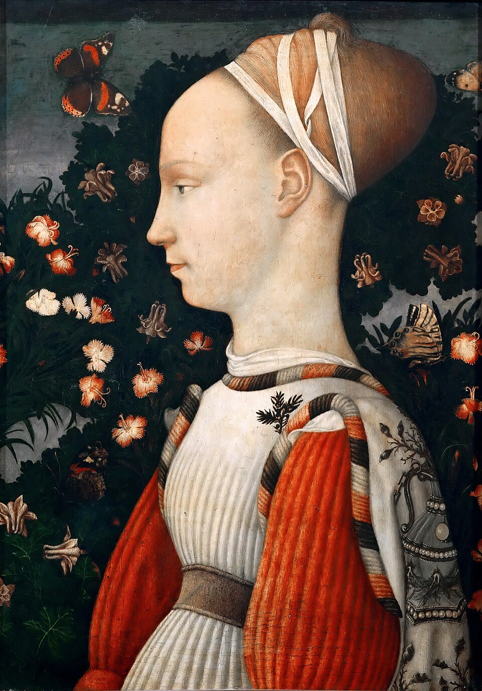
画像を拡大 ＋《エステ家公女の肖像》
- 作者
- ピサネッロ
- 制作時期
- 1435～1449年頃
- 所在地・所蔵
- パリ、ルーヴル美術館、RF766
- 素材・形式
- 板絵
出典・画像について
画像出典：Pisanello
Public domain（PD-Art）
作品情報：作品・画像・利用条件
画像を拡大 ＋
《ベリー公のいとも豪華なる時祷書・1月（Ms.65、f.1v）》
- 作者
- ランブール兄弟
- 制作時期
- 1412～1416年
- 所在地・所蔵
- シャンティイ、コンデ美術館
- 素材・形式
- 写本挿絵
出典・画像について

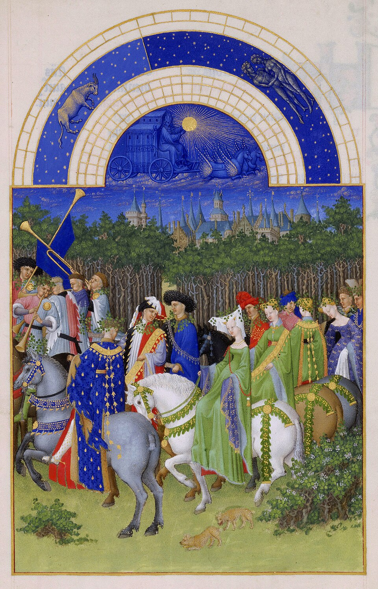
画像を拡大 ＋《ベリー公のいとも豪華なる時祷書・5月（Ms.65、f.5v）》
- 作者
- ランブール兄弟
- 制作時期
- 1412～1416年
- 所在地・所蔵
- シャンティイ、コンデ美術館
- 素材・形式
- 写本挿絵
出典・画像について

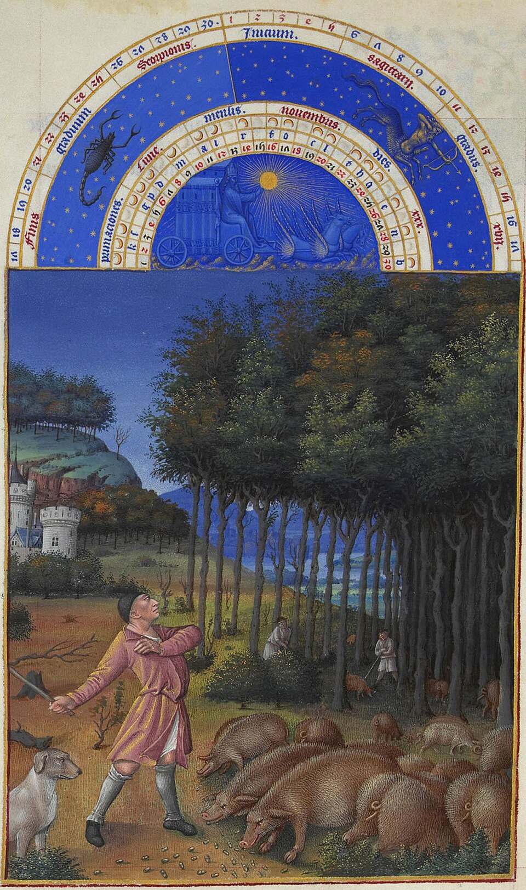
画像を拡大 ＋《ベリー公のいとも豪華なる時祷書・11月（Ms.65、f.11v）》
- 作者
- ジャン・コロンブ
- 制作時期
- 1485～1486年
- 所在地・所蔵
- シャンティイ、コンデ美術館
- 素材・形式
- 写本挿絵
出典・画像について
動画右側は11月です。ジャン・コロンブによる後期の制作段階を、ランブール兄弟の写本初期制作と区別しています。
画像出典：Jean Colombe
Public domain（PD-Art）
作品情報：作品・画像・利用条件
美術の転換点はルネサンスですが、ゴシック期にはすでにその兆候が見られます。どの美術様式も突然生まれたのではなく、それに先立つ重要な歴史的出来事がありました。美術の特徴と、その背景の歴史を合わせて考えることが大切です。
要点まとめ
- ゴシックは12世紀中頃に生まれた、都市部に多い尖塔を持つ豪勢な教会建築の様式。名称は後のルネサンスの人々が、ゲルマン民族のゴート人を意味する語で呼んだことに由来する。
- 契機はパリ郊外のサン・ドニ修道院の改築で、修道院長シュジェールは信仰を導く光の重要性を説いた。初期の代表例はパリのノートルダム大聖堂、シャルトル大聖堂、カンタベリー大聖堂。
- 尖頭アーチと、トンネル・ヴォールトを直交させた交差ヴォールト（リブで補強）によって壁を薄くでき、大きな窓で光を取り込めるようになった。教会は高さを競って大型化した。
- 13世紀の最盛期にはランス、アミアンのノートルダム大聖堂、ケルン大聖堂が建てられ、外壁を支えるフライング・バットレスが多用された。
- 窓にはステンドグラスと、聖母マリアを暗示するバラ窓が設けられた。彫刻は柱から飛び出す円柱人像となって自然なプロポーションを得て、優美なS字のポーズが多く見られる。
- 第4回十字軍がコンスタンティノープルを占領するなど十字軍の失敗で教皇の権力が弱まった。フランスでは尊厳王フィリップ2世が王権を復興し、フィリップ4世はアナーニ事件（1303年）で教皇を捕らえ、アヴィニョン捕囚を経て西方教会大分裂が起きた。
- 交易で栄えたイタリアでは絵画が発展した。チマブーエは名前の残る最初の画家とされ、弟子とされる「西洋絵画の父」ジョットは《ユダの接吻》で自然な表現と感情を描き、プレ・ルネサンスに分類される。
- シエナではドゥッチョとシモーネ・マルティーニが優美で豪華な装飾の絵画を描いた。アヴィニョンでの交流から14世紀後半に国際ゴシックが広がり、ランブール兄弟の《ベリー公のいとも豪華なる時祷書》が最高傑作ともいわれる。
確認問題
答えを考えてから開いてください。選択問題は選ぶとすぐ正誤と解説が出ます（選択肢の順番は開くたびに変わります）。各問題のリンクから該当の章や作品カードへ戻れます。
選択問題：0／5問回答・正解0
A. 一問一答答えを考えてから開く
問1ゴシック建築の契機となったサン・ドニ修道院の改築を計画し、信仰を導く手段として光の重要性を説いた修道院長は誰か。
答えを見る
問2尖頭アーチでもかかる横方向の力を外から支える、外壁に付けた浮いた梁のような構造を何と呼ぶか。
答えを見る
問31303年、フランス国王フィリップ4世が家臣を使い、教会への課税に反発した教皇ボニファティウス8世を捕らえさせた事件を何と呼ぶか。
答えを見る
B. 4択選ぶとすぐ正誤と解説
問4ゴシック建築で壁を薄くし、大きな窓を設けることを可能にした構造の組合せはどれか。
→ 本文で確認（ヴォールトと薄い壁）
問5ゴシック大聖堂の大きな円形窓、バラ窓が暗示する存在はどれか。
→ 本文で確認（バラ窓と聖母への救い）
問6チマブーエの弟子とされ、「西洋絵画の父」とも称される画家は誰か。
→ 本文で確認（ジョットの空間と感情）
C. 図版問題画像を見て答える
問7この作品の名前と作者を答えよ。
答えを見る
問8この作品の作者は誰か。
→ 作品カードで確認
問9国際ゴシックの最高傑作ともいわれるこの写本挿絵の作者は誰か。
→ 作品カードで確認